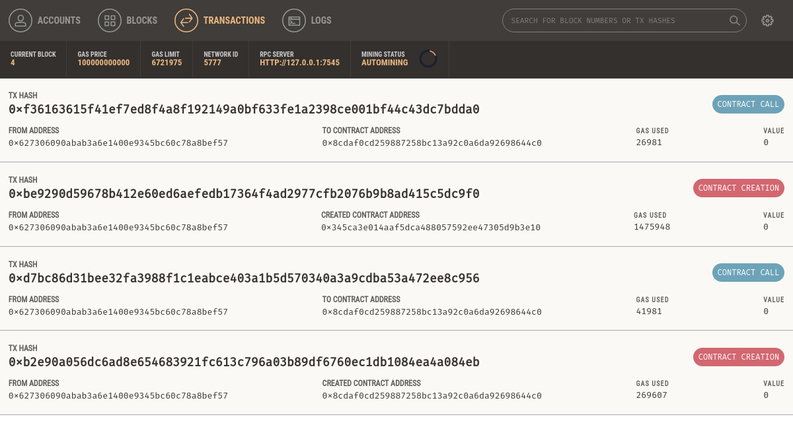
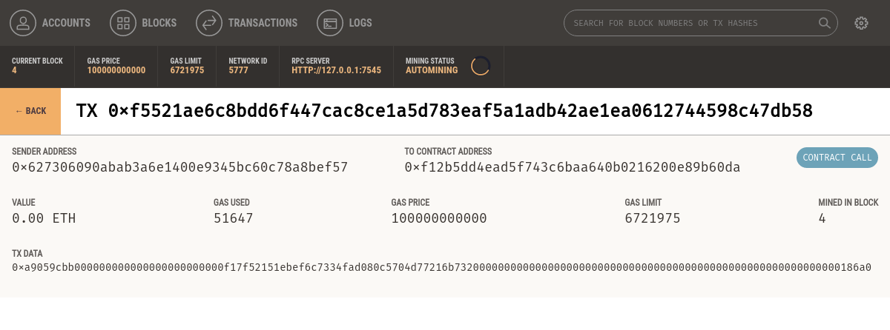

contract ERC20 {
function totalSupply() constant returns (uint theTotalSupply);
function balanceOf(address _owner) constant returns (uint balance);
function transfer(address _to, uint _value) returns (bool success);
function transferFrom(address _from, address _to, uint _value) returns
(bool success);
function approve(address _spender, uint _value) returns (bool success);
function allowance(address _owner, address _spender) constant returns
(uint remaining);
event Transfer(address indexed _from, address indexed _to, uint _value);
event Approval(address indexed _owner, address indexed _spender, uint _value);
}Tokens
The word "token" derives from the Old English "tācen," meaning a sign or symbol. It is commonly used to refer to privately issued special-purpose coin-like items of insignificant intrinsic value, such as transportation tokens, laundry tokens, and arcade game tokens.
Nowadays, "tokens" administered on blockchains are redefining the word to mean blockchain-based abstractions that can be owned and that represent assets, currency, or access rights.
The association between the word "token" and insignificant value has a lot to do with the limited use of the physical versions of tokens. Often restricted to specific businesses, organizations, or locations, physical tokens are not easily exchangeable and typically have only one function. With blockchain tokens, these restrictions are lifted—or, more accurately, completely redefinable. Many blockchain tokens serve multiple purposes globally and can be traded for each other or for other currencies on global liquid markets. With the restrictions on use and ownership gone, the "insignificant value" expectation is also a thing of the past.
In this chapter, we look at various uses for tokens and how they are created. We also discuss attributes of tokens such as fungibility and intrinsicality. Finally, we examine the standards and technologies that they are based on, and experiment by building our own tokens.
How Tokens Are Used
The most obvious use of tokens is as digital private currencies. However, this is only one possible use. Tokens can be programmed to serve many different functions, often overlapping. For example, a token can simultaneously convey a voting right, an access right, and ownership of a resource. As the following list shows, currency is just the first "app":
- Currency
-
A token can serve as a form of currency, with a value determined through private trade.
- Resource
-
A token can represent a resource earned or produced in a sharing economy or resource-sharing environment; for example, a storage or CPU token representing resources that can be shared over a network.
- Asset
-
A token can represent ownership of an intrinsic or extrinsic, tangible or intangible asset; for example, gold, real estate, a car, oil, energy, MMOG items, etc.
- Access
-
A token can represent access rights and grant access to a digital or physical property, such as a discussion forum, an exclusive website, a hotel room, or a rental car.
- Equity
-
A token can represent shareholder equity in a digital organization (e.g., a DAO) or legal entity (e.g., a corporation).
- Voting
-
A token can represent voting rights in a digital or legal system.
- Collectible
-
A token can represent a digital collectible (e.g., CryptoPunks) or physical collectible (e.g., a painting).
- Identity
-
A token can represent a digital identity (e.g., avatar) or legal identity (e.g., national ID).
- Attestation
-
A token can represent a certification or attestation of fact by some authority or by a decentralized reputation system (e.g., marriage record, birth certificate, college degree).
- Utility
-
A token can be used to access or pay for a service.
Often, a single token encompasses several of these functions. Sometimes it is hard to discern between them, as the physical equivalents have always been inextricably linked. For example, in the physical world, a driver’s license (attestation) is also an identity document (identity) and the two cannot be separated. In the digital realm, previously commingled functions can be separated and developed independently (e.g., an anonymous attestation).
Tokens and Fungibility
Wikipedia says: "In economics, fungibility is the property of a good or a commodity whose individual units are essentially interchangeable."
Tokens are fungible when we can substitute any single unit of the token for another without any difference in its value or function.
Strictly speaking, if a token’s historical provenance can be tracked, then it is not entirely fungible. The ability to track provenance can lead to blacklisting and whitelisting, reducing or eliminating fungibility.
Non-fungible tokens are tokens that each represent a unique tangible or intangible item and therefore are not interchangeable. For example, a token that represents ownership of a specific Van Gogh painting is not equivalent to another token that represents a Picasso, even though they might be part of the same "art ownership token" system. Similarly, a token representing a specific digital collectible such as a specific CryptoKitty is not interchangeable with any other CryptoKitty. Each non-fungible token is associated with a unique identifier, such as a serial number.
We will see examples of both fungible and non-fungible tokens later in this chapter.
|
Note
|
Note that "fungible" is often used to mean "directly exchangeable for money" (for example, a casino token can be "cashed in," while laundry tokens typically cannot). This is not the sense in which we use the word here. |
Counterparty Risk
Counterparty risk is the risk that the other party in a transaction will fail to meet their obligations. Some types of transactions suffer additional counterparty risk because there are more than two parties involved. For example, if you hold a certificate of deposit for a precious metal and you sell that to someone, there are at least three parties in that transaction: the seller, the buyer, and the custodian of the precious metal. Someone holds the physical asset; by necessity they become party to the fulfillment of the transaction and add counterparty risk to any transaction involving that asset. In general, when an asset is traded indirectly through the exchange of a token of ownership, there is additional counterparty risk from the custodian of the asset. Do they have the asset? Will they recognize (or allow) the transfer of ownership based on the transfer of a token (such as a certificate, deed, title, or digital token)? In the world of digital tokens representing assets, as in the nondigital world, it is important to understand who holds the asset that is represented by the token and what rules apply to that underlying asset.
Tokens and Intrinsicality
The word "intrinsic" derives from the Latin "intra," meaning "from within."
Some tokens represent digital items that are intrinsic to the blockchain. Those digital assets are governed by consensus rules, just like the tokens themselves. This has an important implication: tokens that represent intrinsic assets do not carry additional counterparty risk. If you hold the keys for a CryptoKitty, there is no other party holding that CryptoKitty for you—you own it directly. The blockchain consensus rules apply and your ownership (i.e., control) of the private keys is equivalent to ownership of the asset, without any intermediary.
Conversely, many tokens are used to represent extrinsic things, such as real estate, corporate voting shares, trademarks, and gold bars. The ownership of these items, which are not "within" the blockchain, is governed by law, custom, and policy, separate from the consensus rules that govern the token. In other words, token issuers and owners may still depend on real-world non-smart contracts. As a result, these extrinsic assets carry additional counterparty risk because they are held by custodians, recorded in external registries, or controlled by laws and policies outside the blockchain environment.
One of the most important ramifications of blockchain-based tokens is the ability to convert extrinsic assets into intrinsic assets and thereby remove counterparty risk. A good example is moving from equity in a corporation (extrinsic) to an equity or voting token in a DAO or similar (intrinsic) organization.
Using Tokens: Utility or Equity
Almost all projects in Ethereum today launch with some kind of token. But do all these projects really need tokens? Are there any disadvantages to using a token, or will we see the slogan "tokenize all the things" come to fruition? In principle, the use of tokens can be seen as the ultimate management or organization tool. In practice, the integration of blockchain platforms, including Ethereum, into the existing structures of society means that, so far, there are many limitations to their applicability.
Let’s start by clarifying the role of a token in a new project. The majority of projects are using tokens in one of two ways: either as "utility tokens" or as "equity tokens." Very often, those two roles are conflated.
Utility tokens are those where the use of the token is required to gain access to a service, application, or resource. Examples of utility tokens include tokens that represent resources such as shared storage, or access to services such as social media networks.
Equity tokens are those that represent shares in the control or ownership of something, such as a startup. Equity tokens can be as limited as nonvoting shares for distribution of dividends and profits, or as expansive as voting shares in a decentralized autonomous organization, where management of the platform is through some complex governance system based on votes by the token holders.
It’s a Duck!
Many startups face a difficult problem: tokens are a great fundraising mechanism, but offering securities (equity) to the public is a regulated activity in most jurisdictions. By disguising equity tokens as utility tokens, many startups hope to get around these regulatory restrictions and raise money from a public offering while presenting it as a pre-sale of "service access vouchers" or, as we call them, utility tokens. Whether these thinly disguised equity offerings will be able to skirt the regulators remains to be seen.
As the popular saying goes: "If it walks like a duck and quacks like a duck, it’s a duck." Regulators are not likely to be distracted by these semantic contortions; quite the opposite, they are more likely to see such legal sophistry as an attempt to deceive the public.
Utility Tokens: Who Needs Them?
The real problem is that utility tokens introduce significant risks and adoption barriers for startups. Perhaps in a distant future "tokenize all the things" will become reality, but at present the set of people who have an understanding of and desire to use a token is a subset of the already small cryptocurrency market.
For a startup, each innovation represents a risk and a market filter. Innovation is taking the road least traveled, walking away from the path of tradition. It is already a lonely walk. If a startup is trying to innovate in a new area of technology, such as storage sharing over P2P networks, that is a lonely enough path. Adding a utility token to that innovation and requiring users to adopt tokens in order to use the service compounds the risk and increases the barriers to adoption. It’s walking off the already lonely trail of P2P storage innovation and into the wilderness.
Think of each innovation as a filter. It limits adoption to the subset of the market that can become early adopters of this innovation. Adding a second filter compounds that effect, further limiting the addressable market. You are asking your early adopters to adopt not one but two completely new technologies: the novel application/platform/service you built, and the token economy.
For a startup, each innovation introduces risks that increase the chance of failure of the startup. If you take your already risky startup idea and add a utility token, you are adding all the risks of the underlying platform (Ethereum), broader economy (exchanges, liquidity), regulatory environment (equity/commodity regulators), and technology (smart contracts, token standards). That’s a lot of risk for a startup.
Advocates of "tokenize all the things" will likely counter that by adopting tokens they are also inheriting the market enthusiasm, early adopters, technology, innovation, and liquidity of the entire token economy. That is true too. The question is whether the benefits and enthusiasm outweigh the risks and uncertainties.
Nevertheless, some of the most innovative business ideas are indeed taking place in the crypto realm. If regulators are not quick enough to adopt laws and support new business models, entrepreneurs and associated talent will seek to operate in other jurisdictions that are more crypto-friendly. This is already happening.
Finally, at the beginning of this chapter, when introducing tokens, we discussed the colloquial meaning of "token" as "something of insignificant value." The underlying reason for the insignificant value of most tokens is because they can only be used in a very narrow context: one bus company, one laundromat, one arcade, one hotel, or one company store. Limited liquidity, limited applicability, and high conversion costs reduce the value of tokens until they are only of "token" value. So when you add a utility token to your platform, but the token can only be used on your single platform with a small market, you are recreating the conditions that made physical tokens worthless. This may indeed be the correct way to incorporate tokenization into your project. However, if in order to use your platform a user has to convert something into your utility token, use it, and then convert the remainder back into something more generally useful, you’ve created a company scrip. The switching costs of a digital token are orders of magnitude lower than for a physical token without a market, but they are not zero. Utility tokens that work across an entire industry sector will be very interesting and probably quite valuable. But if you set up your startup to have to bootstrap an entire industry standard in order to succeed, you may have already failed.
|
Note
|
One of the benefits of deploying services on general-purpose platforms like Ethereum is being able to connect smart contracts (and therefore the utility of tokens) across projects, increasing the potential for liquidity and utility of tokens. |
Make this decision for the right reasons. Adopt a token because your application cannot work without a token. Adopt it because the token lifts a fundamental market barrier or solves an access problem. Don’t introduce a utility token because it is the only way you can raise money fast and you need to pretend it’s not a public securities offering.
Tokens on Ethereum
Blockchain tokens existed before Ethereum. In some ways, the first blockchain currency, Bitcoin, is a token itself. Many token platforms were also developed on Bitcoin and other cryptocurrencies before Ethereum. However, the introduction of the first token standard on Ethereum led to an explosion of tokens.
Vitalik Buterin suggested tokens as one of the most obvious and useful applications of a generalized programmable blockchain such as Ethereum. In fact, in the first year of Ethereum, it was common to see Vitalik and others wearing T-shirts emblazoned with the Ethereum logo and a smart contract sample on the back. There were several variations of this T-shirt, but the most common showed an implementation of a token.
Before we delve into the details of creating tokens on Ethereum, it is important to have an overview of how tokens work on Ethereum. Tokens are different from ether because the Ethereum protocol does not know anything about them. Sending ether is an intrinsic action of the Ethereum platform, but sending or even owning tokens is not. The ether balance of Ethereum accounts is handled at the protocol level, whereas the token balance of Ethereum accounts is handled at the smart contract level. In order to create a new token on Ethereum, you must create a new smart contract. Once deployed, the smart contract handles everything, including ownership, transfers, and access rights. You can write your smart contract to perform all the necessary actions any way you want, but it is probably wisest to follow an existing standard. We will look at such standards next. We discuss the pros and cons of the following standards at the end of the chapter.
The ERC20 Token Standard
The first standard was introduced in November 2015 by Fabian Vogelsteller as an Ethereum Request for Comments (ERC). It was automatically assigned GitHub issue number 20, giving rise to the name "ERC20 token." The vast majority of tokens are currently based on the ERC20 standard. The ERC20 request for comments eventually became Ethereum Improvement Proposal 20 (EIP-20), but it is mostly still referred to by the original name, ERC20.
ERC20 is a standard for fungible tokens, meaning that different units of an ERC20 token are interchangeable and have no unique properties.
The ERC20 standard defines a common interface for contracts implementing a token, such that any compatible token can be accessed and used in the same way. The interface consists of a number of functions that must be present in every implementation of the standard, as well as some optional functions and attributes that may be added by developers.
ERC20 required functions and events
An ERC20-compliant token contract must provide at least the following functions and events:
- totalSupply
-
Returns the total units of this token that currently exist. ERC20 tokens can have a fixed or a variable supply.
- balanceOf
-
Given an address, returns the token balance of that address.
- transfer
-
Given an address and amount, transfers that amount of tokens to that address, from the balance of the address that executed the transfer.
- transferFrom
-
Given a sender, recipient, and amount, transfers tokens from one account to another. Used in combination with approve.
- approve
-
Given a recipient address and amount, authorizes that address to execute several transfers up to that amount, from the account that issued the approval.
- allowance
-
Given an owner address and a spender address, returns the remaining amount that the spender is approved to withdraw from the owner.
- Transfer
-
Event triggered upon a successful transfer (call to transfer or transferFrom) (even for zero-value transfers).
- Approval
-
Event logged upon a successful call to approve.
ERC20 optional functions
In addition to the required functions listed in the previous section, the following optional functions are also defined by the standard:
- name
-
Returns the human-readable name (e.g., "US Dollars") of the token.
- symbol
-
Returns a human-readable symbol (e.g., "USD") for the token.
- decimals
-
Returns the number of decimals used to divide token amounts. For example, if decimals is 2, then the token amount is divided by 100 to get its user representation.
The ERC20 interface defined in Solidity
Here’s what an ERC20 interface specification looks like in Solidity:
ERC20 data structures
If you examine any ERC20 implementation you will see that it contains two data structures, one to track balances and one to track allowances. In Solidity, they are implemented with a data mapping.
The first data mapping implements an internal table of token balances, by owner. This allows the token contract to keep track of who owns the tokens. Each transfer is a deduction from one balance and an addition to another balance:
mapping(address => uint256) balances;The second data structure is a data mapping of allowances. As we will see in the next section, with ERC20 tokens an owner of a token can delegate authority to a spender, allowing them to spend a specific amount (allowance) from the owner’s balance. The ERC20 contract keeps track of the allowances with a two-dimensional mapping, with the primary key being the address of the token owner, mapping to a spender address and an allowance amount:
mapping (address => mapping (address => uint256)) public allowed;ERC20 workflows: "transfer" and "approve & transferFrom"
The ERC20 token standard has two transfer functions. You might be wondering why.
ERC20 allows for two different workflows. The first is a single-transaction, straightforward workflow using the transfer function. This workflow is the one used by wallets to send tokens to other wallets. The vast majority of token transactions happen with the transfer workflow.
Executing the transfer contract is very simple. If Alice wants to send 10 tokens to Bob, her wallet sends a transaction to the token contract’s address, calling the transfer function with Bob’s address and 10 as the arguments. The token contract adjusts Alice’s balance (–10) and Bob’s balance (+10) and issues a Transfer event.
The second workflow is a two-transaction workflow that uses approve followed by transferFrom. This workflow allows a token owner to delegate their control to another address. It is most often used to delegate control to a contract for distribution of tokens, but it can also be used by exchanges.
For example, if a company is selling tokens for an ICO, they can approve a crowdsale contract address to distribute a certain amount of tokens. The crowdsale contract can then transferFrom the token contract owner’s balance to each buyer of the token, as illustrated in The two-step approve & transferFrom workflow of ERC20 tokens.
|
Note
|
An Initial Coin Offering (ICO) is a crowdfunding mechanism used by companies and organizations to raise money by selling tokens. The term is derived from Initial Public Offering (IPO), which is the process by which a public company offers shares for sale to investors on a stock exchange. Unlike the highly regulated IPO markets, ICOs are open, global, and messy. The examples and explanations of ICOs in this book are not an endorsement of this type of fundraising. |

Figure 1. The two-step approve & transferFrom workflow of ERC20 tokens
For the approve & transferFrom workflow, two transactions are needed. Let’s say that Alice wants to allow the AliceICO contract to sell 50% of all the AliceCoin tokens to buyers like Bob and Charlie. First, Alice launches the AliceCoin ERC20 contract, issuing all the AliceCoin to her own address. Then, Alice launches the AliceICO contract that can sell tokens for ether. Next, Alice initiates the approve & transferFrom workflow. She sends a transaction to the AliceCoin contract, calling approve with the address of the AliceICO contract and 50% of the totalSupply as arguments. This will trigger the Approval event. Now, the AliceICO contract can sell AliceCoin.
When the AliceICO contract receives ether from Bob, it needs to send some AliceCoin to Bob in return. Within the AliceICO contract is an exchange rate between AliceCoin and ether. The exchange rate that Alice set when she created the AliceICO contract determines how many tokens Bob will receive for the amount of ether sent to the AliceICO contract. When the AliceICO contract calls the AliceCoin transferFrom function, it sets Alice’s address as the sender and Bob’s address as the recipient, and uses the exchange rate to determine how many AliceCoin tokens will be transferred to Bob in the value field. The AliceCoin contract transfers the balance from Alice’s address to Bob’s address and triggers a Transfer event. The AliceICO contract can call transferFrom an unlimited number of times, as long as it doesn’t exceed the approval limit Alice set. The AliceICO contract can keep track of how many AliceCoin tokens it can sell by calling the allowance function.
ERC20 implementations
While it is possible to implement an ERC20-compatible token in about 30 lines of Solidity code, most implementations are more complex. This is to account for potential security vulnerabilities. There are two implementations mentioned in the EIP-20 standard:
- Consensys EIP20
-
A simple and easy-to-read implementation of an ERC20-compatible token.
- OpenZeppelin StandardToken
-
This implementation is ERC20-compatible, with additional security precautions. It forms the basis of OpenZeppelin libraries implementing more complex ERC20-compatible tokens with fundraising caps, auctions, vesting schedules, and other features.
Launching Our Own ERC20 Token
Let’s create and launch our own token. For this example, we will use the Truffle framework. The example assumes you have already installed truffle and configured it, and are familiar with its basic operation (for details, see [truffle]).
We will call our token "Mastering Ethereum Token,” with the symbol "MET."
|
Note
|
You can find this example in the book’s GitHub repository. |
First, let’s create and initialize a Truffle project directory. Run these four commands and accept the default answers to any questions:
$ mkdir METoken $ cd METoken METoken $ truffle init METoken $ npm init
You should now have the following directory structure:
METoken/ +---- contracts | `---- Migrations.sol +---- migrations | `---- 1_initial_migration.js +---- package.json +---- test +---- truffle-config.js `---- truffle.js
Edit the truffle.js or truffle-config.js configuration file to set up your Truffle environment, or copy the latter from the repository.
If you use the example truffle-config.js, remember to create a file .env in the METoken folder containing your test private keys for testing and deployment on public Ethereum test networks, such as Ropsten or Kovan. You can export your test network private key from MetaMask.
After that your directory should look like:
METoken/ +---- contracts | `---- Migrations.sol +---- migrations | `---- 1_initial_migration.js +---- package.json +---- test +---- truffle-config.js +---- truffle.js `---- .env *new file*
|
Warning
|
Only use test keys or test mnemonics that are not used to hold funds on the main Ethereum network. Never use keys that hold real money for testing. |
For our example, we will import the OpenZeppelin library, which implements some important security checks and is easy to extend:
$ npm install openzeppelin-solidity@1.12.0 + openzeppelin-solidity@1.12.0 added 1 package from 1 contributor and audited 2381 packages in 4.074s
The openzeppelin-solidity package will add about 250 files under the node_modules directory. The OpenZeppelin library includes a lot more than the ERC20 token, but we will only use a small part of it.
Next, let’s write our token contract. Create a new file, METoken.sol, and copy the example code from GitHub.
Our contract, shown in METoken.sol: A Solidity contract implementing an ERC20 token, is very simple, as it inherits all its functionality from the OpenZeppelin library.
Example 1. METoken.sol: A Solidity contract implementing an ERC20 token
link:code/truffle/METoken/contracts/METoken.sol[]Here, we are defining the optional variables name, symbol, and decimals. We also define an _initial_supply variable, set to 21 million tokens; with two decimals of subdivision that gives 2.1 billion total units. In the contract’s initialization (constructor) function we set the totalSupply to be equal to _initial_supply and allocate all of the _initial_supply to the balance of the account (msg.sender) that creates the METoken contract.
We now use truffle to compile the METoken code:
$ truffle compile Compiling ./contracts/METoken.sol... Compiling ./contracts/Migrations.sol... Compiling openzeppelin-solidity/contracts/math/SafeMath.sol... Compiling openzeppelin-solidity/contracts/token/ERC20/BasicToken.sol... Compiling openzeppelin-solidity/contracts/token/ERC20/ERC20.sol... Compiling openzeppelin-solidity/contracts/token/ERC20/ERC20Basic.sol... Compiling openzeppelin-solidity/contracts/token/ERC20/StandardToken.sol...
As you can see, truffle incorporates necessary dependencies from the OpenZeppelin libraries and compiles those contracts too.
Let’s set up a migration script to deploy the METoken contract. Create a new file called 2_deploy_contracts.js, in the METoken/migrations folder. Copy the contents from the example in the GitHub repository:
2_deploy_contracts: Migration to deploy METoken
link:code/truffle/METoken/migrations/2_deploy_contracts.js[]Before we deploy on one of the Ethereum test networks, let’s start a local blockchain to test everything. Start the ganache blockchain, either from the command line with ganache-cli or from the graphical user interface.
Once ganache is started, we can deploy our METoken contract and see if everything works as expected:
$ truffle migrate --network ganache Using network 'ganache'. Running migration: 1_initial_migration.js Deploying Migrations... ... 0xb2e90a056dc6ad8e654683921fc613c796a03b89df6760ec1db1084ea4a084eb Migrations: 0x8cdaf0cd259887258bc13a92c0a6da92698644c0 Saving successful migration to network... ... 0xd7bc86d31bee32fa3988f1c1eabce403a1b5d570340a3a9cdba53a472ee8c956 Saving artifacts... Running migration: 2_deploy_contracts.js Deploying METoken... ... 0xbe9290d59678b412e60ed6aefedb17364f4ad2977cfb2076b9b8ad415c5dc9f0 METoken: 0x345ca3e014aaf5dca488057592ee47305d9b3e10 Saving successful migration to network... ... 0xf36163615f41ef7ed8f4a8f192149a0bf633fe1a2398ce001bf44c43dc7bdda0 Saving artifacts...
On the ganache console, we should see that our deployment has created four new transactions, as depicted in METoken deployment on ganache.

Figure 2. METoken deployment on ganache
Interacting with METoken using the Truffle console
We can interact with our contract on the ganache blockchain using the Truffle console. This is an interactive JavaScript environment that provides access to the Truffle environment and, via web3, to the blockchain. In this case, we will connect the Truffle console to the ganache blockchain:
$ truffle console --network ganache truffle(ganache)>
The truffle(ganache)> prompt shows that we are connected to the ganache blockchain and are ready to type our commands. The Truffle console supports all the truffle commands, so we could compile and migrate from the console. We’ve already run those commands, so let’s go directly to the contract itself. The METoken contract exists as a JavaScript object within the Truffle environment. Type **METoken** at the prompt and it will dump the entire contract definition:
truffle(ganache)> METoken
{ [Function: TruffleContract]
_static_methods:
[...]
currentProvider:
HttpProvider {
host: 'http://localhost:7545',
timeout: 0,
user: undefined,
password: undefined,
headers: undefined,
send: [Function],
sendAsync: [Function],
_alreadyWrapped: true },
network_id: '5777' }
The METoken object also exposes several attributes, such as the address of the contract (as deployed by the migrate command):
truffle(ganache)> METoken.address '0x345ca3e014aaf5dca488057592ee47305d9b3e10'
If we want to interact with the deployed contract, we have to use an asynchronous call, in the form of a JavaScript "promise." We use the deployed function to get the contract instance and then call the totalSupply function:
truffle(ganache)> METoken.deployed().then(instance => instance.totalSupply())
BigNumber { s: 1, e: 9, c: [ 2100000000 ] }
Next, let’s use the accounts created by ganache to check our METoken balance and send some METoken to another address. First, let’s get the account addresses:
truffle(ganache)> let accounts
undefined
truffle(ganache)> web3.eth.getAccounts((err,res) => { accounts = res })
undefined
truffle(ganache)> accounts[0]
'0x627306090abab3a6e1400e9345bc60c78a8bef57'
The accounts list now contains all the accounts created by ganache, and account[0] is the account that deployed the METoken contract. It should have a balance of METoken, because our METoken constructor gives the entire token supply to the address that created it. Let’s check:
truffle(ganache)> METoken.deployed().then(instance =>
{ instance.balanceOf(accounts[0]).then(console.log) })
undefined
truffle(ganache)> BigNumber { s: 1, e: 9, c: [ 2100000000 ] }
Finally, let’s transfer 1000.00 METoken from account[0] to account[1], by calling the contract’s transfer function:
truffle(ganache)> METoken.deployed().then(instance =>
{ instance.transfer(accounts[1], 100000) })
undefined
truffle(ganache)> METoken.deployed().then(instance =>
{ instance.balanceOf(accounts[0]).then(console.log) })
undefined
truffle(ganache)> BigNumber { s: 1, e: 9, c: [ 2099900000 ] }
undefined
truffle(ganache)> METoken.deployed().then(instance =>
{ instance.balanceOf(accounts[1]).then(console.log) })
undefined
truffle(ganache)> BigNumber { s: 1, e: 5, c: [ 100000 ] }
|
Tip
|
METoken has 2 decimals of precision, meaning that 1 METoken is 100 units in the contract. When we transfer 1,000 METoken, we specify the value as 100000 in the call to the transfer function. |
As you can see, in the console, account[0] now has 20,999,000 MET, and account[1] has 1,000 MET.
If you switch to the ganache graphical user interface, as shown in METoken transfer on ganache, you will see the transaction that called the transfer function.

Figure 3. METoken transfer on ganache
Sending ERC20 tokens to contract addresses
So far, we’ve set up an ERC20 token and transferred some tokens from one account to another. All the accounts we used for these demonstrations are externally owned accounts, meaning they are controlled by a private key, not a contract. What happens if we send MET to a contract address? Let’s find out!
First, let’s deploy another contract into our test environment. For this example, we will use our first contract, Faucet.sol. Let’s add it to the METoken project by copying it to the contracts directory. Our directory should look like this:
METoken/ +---- contracts | +---- Faucet.sol | +---- METoken.sol | `---- Migrations.sol
We’ll also add a migration, to deploy Faucet separately from METoken:
var Faucet = artifacts.require("Faucet");
module.exports = function(deployer) {
// Deploy the Faucet contract as our only task
deployer.deploy(Faucet);
};Let’s compile and migrate the contracts from the Truffle console:
$ truffle console --network ganache truffle(ganache)> compile Compiling ./contracts/Faucet.sol... Writing artifacts to ./build/contracts truffle(ganache)> migrate Using network 'ganache'. Running migration: 1_initial_migration.js Deploying Migrations... ... 0x89f6a7bd2a596829c60a483ec99665c7af71e68c77a417fab503c394fcd7a0c9 Migrations: 0xa1ccce36fb823810e729dce293b75f40fb6ea9c9 Saving artifacts... Running migration: 2_deploy_contracts.js Replacing METoken... ... 0x28d0da26f48765f67e133e99dd275fac6a25fdfec6594060fd1a0e09a99b44ba METoken: 0x7d6bf9d5914d37bcba9d46df7107e71c59f3791f Saving artifacts... Running migration: 3_deploy_faucet.js Deploying Faucet... ... 0x6fbf283bcc97d7c52d92fd91f6ac02d565f5fded483a6a0f824f66edc6fa90c3 Faucet: 0xb18a42e9468f7f1342fa3c329ec339f254bc7524 Saving artifacts...
Great. Now let’s send some MET to the Faucet contract:
truffle(ganache)> METoken.deployed().then(instance =>
{ instance.transfer(Faucet.address, 100000) })
truffle(ganache)> METoken.deployed().then(instance =>
{ instance.balanceOf(Faucet.address).then(console.log)})
truffle(ganache)> BigNumber { s: 1, e: 5, c: [ 100000 ] }
Alright, we have transferred 1,000 MET to the Faucet contract. Now, how do we withdraw those tokens?
Remember, Faucet.sol is a pretty simple contract. It only has one function, withdraw, which is for withdrawing ether. It doesn’t have a function for withdrawing MET, or any other ERC20 token. If we use withdraw it will try to send ether, but since Faucet doesn’t have a balance of ether yet, it will fail.
The METoken contract knows that Faucet has a balance, but the only way that it can transfer that balance is if it receives a transfer call from the address of the contract. Somehow we need to make the Faucet contract call the transfer function in METoken.
If you’re wondering what to do next, don’t. There is no solution to this problem. The MET sent to Faucet is stuck, forever. Only the Faucet contract can transfer it, and the Faucet contract doesn’t have code to call the transfer function of an ERC20 token contract.
Perhaps you anticipated this problem. Most likely, you didn’t. In fact, neither did hundreds of Ethereum users who accidentally transferred various tokens to contracts that didn’t have any ERC20 capability. According to some estimates, tokens worth more than roughly $2.5 million USD (at the time of writing) have gotten "stuck" like this and are lost forever.
One of the ways that users of ERC20 tokens can inadvertently lose their tokens in a transfer, is when they attempt to transfer to an exchange or another service. They copy an Ethereum address from the website of an exchange, thinking they can simply send tokens to it. However, many exchanges publish receiving addresses that are actually contracts! These contracts are only meant to receive ether, not ERC20 tokens, most often sweeping all funds sent to them to "cold storage" or another centralized wallet. Despite the many warnings saying "do not send tokens to this address," lots of tokens are lost this way.
Demonstrating the “approve & transferFrom” workflow
Our Faucet contract couldn’t handle ERC20 tokens. Sending tokens to it using the transfer function resulted in the loss of those tokens. Let’s rewrite the contract now and make it handle ERC20 tokens. Specifically, we will turn it into a faucet that gives out MET to anyone who asks.
For this example, we’ll make a copy of the truffle project directory (we’ll call it METoken_METFaucet), initialize truffle and npm, install the OpenZeppelin dependencies, and copy the METoken.sol contract. See our first example, in Launching Our Own ERC20 Token, for the detailed instructions.
Our new faucet contract, METFaucet.sol, will look like METFaucet.sol: A faucet for METoken.
Example 2. METFaucet.sol: A faucet for METoken
link:code/truffle/METoken_METFaucet/contracts/METFaucet.sol[]We’ve made quite a few changes to the basic Faucet example. Since METFaucet will use the transferFrom function in METoken, it will need two additional variables. One will hold the address of the deployed METoken contract. The other will hold the address of the owner of the MET, who will approve the faucet withdrawals. The METFaucet contract will call METoken.transferFrom and instruct it to move MET from the owner to the address where the faucet withdrawal request came from.
We declare these two variables here:
StandardToken public METoken;
address public METOwner;Since our faucet needs to be initialized with the correct addresses for METoken and METOwner, we need to declare a custom constructor:
// METFaucet constructor - provide the address of the METoken contract and
// the owner address we will be approved to transferFrom
function METFaucet(address _METoken, address _METOwner) public {
// Initialize the METoken from the address provided
METoken = StandardToken(_METoken);
METOwner = _METOwner;
}The next change is to the withdraw function. Instead of calling transfer, METFaucet uses the transferFrom function in METoken and asks METoken to transfer MET to the faucet recipient:
// Use the transferFrom function of METoken
METoken.transferFrom(METOwner, msg.sender, withdraw_amount);Finally, since our faucet no longer sends ether, we should probably prevent anyone from sending ether to METFaucet, as we wouldn’t want it to get stuck. We change the fallback payable function to reject incoming ether, using the revert function to revert any incoming payments:
// REJECT any incoming ether
function () public payable { revert(); }Now that our METFaucet.sol code is ready, we need to modify the migration script to deploy it. This migration script will be a bit more complex, as METFaucet depends on the address of METoken. We will use a JavaScript promise to deploy the two contracts in sequence. Create 2_deploy_contracts.js as follows:
var METoken = artifacts.require("METoken");
var METFaucet = artifacts.require("METFaucet");
var owner = web3.eth.accounts[0];
module.exports = function(deployer) {
// Deploy the METoken contract first
deployer.deploy(METoken, {from: owner}).then(function() {
// Then deploy METFaucet and pass the address of METoken and the
// address of the owner of all the MET who will approve METFaucet
return deployer.deploy(METFaucet, METoken.address, owner);
});
}Now, we can test everything in the Truffle console. First, we use migrate to deploy the contracts. When METoken is deployed it will allocate all the MET to the account that created it, web3.eth.accounts[0]. Then, we call the approve function in METoken to approve METFaucet to send up to 1,000 MET on behalf of web3.eth.accounts[0]. Finally, to test our faucet, we call METFaucet.withdraw from web3.eth.accounts[1] and try to withdraw 10 MET. Here are the console commands:
$ truffle console --network ganache
truffle(ganache)> migrate
Using network 'ganache'.
Running migration: 1_initial_migration.js
Deploying Migrations...
... 0x79352b43e18cc46b023a779e9a0d16b30f127bfa40266c02f9871d63c26542c7
Migrations: 0xaa588d3737b611bafd7bd713445b314bd453a5c8
Saving artifacts...
Running migration: 2_deploy_contracts.js
Replacing METoken...
... 0xc42a57f22cddf95f6f8c19d794c8af3b2491f568b38b96fef15b13b6e8bfff21
METoken: 0xf204a4ef082f5c04bb89f7d5e6568b796096735a
Replacing METFaucet...
... 0xd9615cae2fa4f1e8a377de87f86162832cf4d31098779e6e00df1ae7f1b7f864
METFaucet: 0x75c35c980c0d37ef46df04d31a140b65503c0eed
Saving artifacts...
truffle(ganache)> METoken.deployed().then(instance =>
{ instance.approve(METFaucet.address, 100000) })
truffle(ganache)> METoken.deployed().then(instance =>
{ instance.balanceOf(web3.eth.accounts[1]).then(console.log) })
truffle(ganache)> BigNumber { s: 1, e: 0, c: [ 0 ] }
truffle(ganache)> METFaucet.deployed().then(instance =>
{ instance.withdraw(1000, {from:web3.eth.accounts[1]}) } )
truffle(ganache)> METoken.deployed().then(instance =>
{ instance.balanceOf(web3.eth.accounts[1]).then(console.log) })
truffle(ganache)> BigNumber { s: 1, e: 3, c: [ 1000 ] }
As you can see from the results, we can use the approve & transferFrom workflow to authorize one contract to transfer tokens defined in another token. If properly used, ERC20 tokens can be used by EOAs and other contracts.
However, the burden of managing ERC20 tokens correctly is pushed to the user interface. If a user incorrectly attempts to transfer ERC20 tokens to a contract address and that contract is not equipped to receive ERC20 tokens, the tokens will be lost.
Issues with ERC20 Tokens
The adoption of the ERC20 token standard has been truly explosive. Thousands of tokens have been launched, both to experiment with new capabilities and to raise funds in various "crowdfund" auctions and ICOs. However, there are some potential pitfalls, as we saw with the issue of transferring tokens to contract addresses.
One of the less obvious issues with ERC20 tokens is that they expose subtle differences between tokens and ether itself. Where ether is transferred by a transaction that has a recipient address as its destination, token transfers occur within the specific token contract state and have the token contract as their destination, not the recipient’s address. The token contract tracks balances and issues events. In a token transfer, no transaction is actually sent to the recipient of the token. Instead, the recipient’s address is added to a map within the token contract itself. A transaction sending ether to an address changes the state of an address. A transaction transferring a token to an address only changes the state of the token contract, not the state of the recipient address. Even a wallet that has support for ERC20 tokens does not become aware of a token balance unless the user explicitly adds a specific token contract to "watch." Some wallets watch the most popular token contracts to detect balances held by addresses they control, but that’s limited to a small fraction of existing ERC20 contracts.
In fact, it’s unlikely that a user would want to track all balances in all possible ERC20 token contracts. Many ERC20 tokens are more like email spam than usable tokens. They automatically create balances for accounts that have ether activity, in order to attract users. If you have an Ethereum address with a long history of activity, especially if it was created in the presale, you will find it full of "junk" tokens that appeared out of nowhere. Of course, the address isn’t really full of tokens; it’s the token contracts that have your address in them. You only see these balances if these token contracts are being watched by the block explorer or wallet you use to view your address.
Tokens don’t behave the same way as ether. Ether is sent with the send function and accepted by any payable function in a contract or any externally owned address. Tokens are sent using transfer or approve & transferFrom functions that exist only in the ERC20 contract, and do not (at least in ERC20) trigger any payable functions in a recipient contract. Tokens are meant to function just like a cryptocurrency such as ether, but they come with certain differences that break that illusion.
Consider another issue. To send ether or use any Ethereum contract you need ether to pay for gas. To send tokens, you also need ether. You cannot pay for a transaction’s gas with a token and the token contract can’t pay for the gas for you. This may change at some point in the distant future, but in the meantime this can cause some rather strange user experiences. For example, let’s say you use an exchange or ShapeShift to convert some bitcoin to a token. You "receive" the token in a wallet that tracks that token’s contract and shows your balance. It looks the same as any of the other cryptocurrencies you have in your wallet. Try sending the token, though, and your wallet will inform you that you need ether to do that. You might be confused—after all, you didn’t need ether to receive the token. Perhaps you have no ether. Perhaps you didn’t even know the token was an ERC20 token on Ethereum; maybe you thought it was a cryptocurrency with its own blockchain. The illusion just broke.
Some of these issues are specific to ERC20 tokens. Others are more general issues that relate to abstraction and interface boundaries within Ethereum. Some can be solved by changing the token interface, while others may need changes to fundamental structures within Ethereum (such as the distinction between EOAs and contracts, and between transactions and messages). Some may not be "solvable" exactly and may require user interface design to hide the nuances and make the user experience consistent regardless of the underlying distinctions.
In the next sections we will look at various proposals that attempt to address some of these issues.
ERC223: A Proposed Token Contract Interface Standard
The ERC223 proposal attempts to solve the problem of inadvertent transfer of tokens to a contract (that may or may not support tokens) by detecting whether the destination address is a contract or not. ERC223 requires that contracts designed to accept tokens implement a function named tokenFallback. If the destination of a transfer is a contract and the contract does not have support for tokens (i.e., does not implement tokenFallback), the transfer fails.
To detect whether the destination address is a contract, the ERC223 reference implementation uses a small segment of inline bytecode in a rather creative way:
function isContract(address _addr) private view returns (bool is_contract) {
uint length;
assembly {
// retrieve the size of the code on target address; this needs assembly
length := extcodesize(_addr)
}
return (length>0);
}The ERC223 contract interface specification is:
interface ERC223Token {
uint public totalSupply;
function balanceOf(address who) public view returns (uint);
function name() public view returns (string _name);
function symbol() public view returns (string _symbol);
function decimals() public view returns (uint8 _decimals);
function totalSupply() public view returns (uint256 _supply);
function transfer(address to, uint value) public returns (bool ok);
function transfer(address to, uint value, bytes data) public returns (bool ok);
function transfer(address to, uint value, bytes data, string custom_fallback)
public returns (bool ok);
event Transfer(address indexed from, address indexed to, uint value,
bytes indexed data);
}ERC223 is not widely implemented, and there is some debate in the ERC discussion thread about backward compatibility and trade-offs between implementing changes at the contract interface level versus the user interface. The debate continues.
ERC777: A Proposed Token Contract Interface Standard
Another proposal for an improved token contract standard is ERC777. This proposal has several goals, including:
-
To offer an ERC20-compatible interface
-
To transfer tokens using a send function, similar to ether transfers
-
To be compatible with ERC820 for token contract registration
-
To allow contracts and addresses to control which tokens they send through a
tokensToSendfunction that is called prior to sending -
To enable contracts and addresses to be notified of the tokens' receipt by calling a
tokensReceivedfunction in the recipient, and to reduce the probability of tokens being locked into contracts by requiring contracts to provide atokensReceivedfunction -
To allow existing contracts to use proxy contracts for the tokensToSend and tokensReceived functions
-
To operate in the same way whether sending to a contract or an EOA
-
To provide specific events for the minting and burning of tokens
-
To enable operators (trusted third parties, intended to be verified contracts) to move tokens on behalf of a token holder
-
To provide metadata on token transfer transactions in userData and operatorData fields
The ongoing discussion on ERC777 can be found on GitHub.
The ERC777 contract interface specification is:
interface ERC777Token {
function name() public constant returns (string);
function symbol() public constant returns (string);
function totalSupply() public constant returns (uint256);
function granularity() public constant returns (uint256);
function balanceOf(address owner) public constant returns (uint256);
function send(address to, uint256 amount, bytes userData) public;
function authorizeOperator(address operator) public;
function revokeOperator(address operator) public;
function isOperatorFor(address operator, address tokenHolder)
public constant returns (bool);
function operatorSend(address from, address to, uint256 amount,
bytes userData,bytes operatorData) public;
event Sent(address indexed operator, address indexed from,
address indexed to, uint256 amount, bytes userData,
bytes operatorData);
event Minted(address indexed operator, address indexed to,
uint256 amount, bytes operatorData);
event Burned(address indexed operator, address indexed from,
uint256 amount, bytes userData, bytes operatorData);
event AuthorizedOperator(address indexed operator,
address indexed tokenHolder);
event RevokedOperator(address indexed operator, address indexed tokenHolder);
}ERC777 hooks
The ERC777 tokens sender hook specification is:
interface ERC777TokensSender {
function tokensToSend(address operator, address from, address to,
uint value, bytes userData, bytes operatorData) public;
}The implementation of this interface is required for any address wishing to be notified of, to handle, or to prevent the debit of tokens. The address for which the contract implements this interface must be registered via ERC820, whether the contract implements the interface for itself or for another address.
The ERC777 tokens recipient hook specification is:
interface ERC777TokensRecipient {
function tokensReceived(
address operator, address from, address to,
uint amount, bytes userData, bytes operatorData
) public;
}The implementation of this interface is required for any address wishing to be notified of, to handle, or to reject the reception of tokens. The same logic and requirements apply to the tokens recipient as to the tokens sender interface, with the added constraint that recipient contracts must implement this interface to prevent locking tokens. If the recipient contract does not register an address implementing this interface, the transfer of tokens will fail.
An important aspect is that only one token sender and one token recipient can be registered per address. Hence, for every ERC777 token transfer the same hook functions are called upon debit and reception of every ERC777 token transfer. A specific token can be identified in these functions using the message’s sender, which is the specific token contract address, to handle a particular use case.
On the other hand, the same token sender and token recipient hooks can be registered for multiple addresses and the hooks can distinguish who are the sender and the intended recipient using the from and to parameters.
A reference implementation of ERC777 is linked in the proposal. ERC777 depends on a parallel proposal for a registry contract, specified in ERC820. Some of the debate on ERC777 is about the complexity of adopting two big changes at once: a new token standard and a registry standard. The discussion continues.
ERC721: Non-fungible Token (Deed) Standard
All the token standards we have looked at so far are for fungible tokens, meaning that units of a token are interchangeable. The ERC20 token standard only tracks the final balance of each account and does not (explicitly) track the provenance of any token.
The ERC721 proposal is for a standard for non-fungible tokens, also known as deeds.
From the Oxford Dictionary:
deed: A legal document that is signed and delivered, especially one regarding the ownership of property or legal rights.
The use of the word "deed" is intended to reflect the "ownership of property" part, even though these are not recognized as "legal documents" in any jurisdiction—yet. It is likely that at some point in the future, legal ownership based on digital signatures on a blockchain platform will be legally recognized.
Non-fungible tokens track ownership of a unique thing. The thing owned can be a digital item, such as an in-game item or digital collectible; or the thing can be a physical item whose ownership is tracked by a token, such as a house, a car, or an artwork. Deeds can also represent things with negative value, such as loans (debt), liens, easements, etc. The ERC721 standard places no limitation or expectation on the nature of the thing whose ownership is tracked by a deed and requires only that it can be uniquely identified, which in the case of this standard is achieved by a 256-bit identifier.
The details of the standard and discussion are tracked in two different GitHub locations:
To grasp the basic difference between ERC20 and ERC721, it is sufficient to look at the internal data structure used in ERC721:
// Mapping from deed ID to owner
mapping (uint256 => address) private deedOwner;Whereas ERC20 tracks the balances that belong to each owner, with the owner being the primary key of the mapping, ERC721 tracks each deed ID and who owns it, with the deed ID being the primary key of the mapping. From this basic difference flow all the properties of a non-fungible token.
The ERC721 contract interface specification is:
interface ERC721 /* is ERC165 */ {
event Transfer(address indexed _from, address indexed _to, uint256 _deedId);
event Approval(address indexed _owner, address indexed _approved,
uint256 _deedId);
event ApprovalForAll(address indexed _owner, address indexed _operator,
bool _approved);
function balanceOf(address _owner) external view returns (uint256 _balance);
function ownerOf(uint256 _deedId) external view returns (address _owner);
function transfer(address _to, uint256 _deedId) external payable;
function transferFrom(address _from, address _to, uint256 _deedId)
external payable;
function approve(address _approved, uint256 _deedId) external payable;
function setApprovalForAll(address _operateor, boolean _approved) payable;
function supportsInterface(bytes4 interfaceID) external view returns (bool);
}ERC721 also supports two optional interfaces, one for metadata and one for enumeration of deeds and owners.
The ERC721 optional interface for metadata is:
interface ERC721Metadata /* is ERC721 */ {
function name() external pure returns (string _name);
function symbol() external pure returns (string _symbol);
function deedUri(uint256 _deedId) external view returns (string _deedUri);
}The ERC721 optional interface for enumeration is:
interface ERC721Enumerable /* is ERC721 */ {
function totalSupply() external view returns (uint256 _count);
function deedByIndex(uint256 _index) external view returns (uint256 _deedId);
function countOfOwners() external view returns (uint256 _count);
function ownerByIndex(uint256 _index) external view returns (address _owner);
function deedOfOwnerByIndex(address _owner, uint256 _index) external view
returns (uint256 _deedId);
}Using Token Standards
In the previous section we reviewed several proposed standards and a couple of widely deployed standards for token contracts. What exactly do these standards do? Should you use these standards? How should you use them? Should you add functionality beyond these standards? Which standards should you use? We will examine some of those questions next.
What Are Token Standards? What Is Their Purpose?
Token standards are the minimum specifications for an implementation. What that means is that in order to be compliant with, say, ERC20, you need to at minimum implement the functions and behavior specified by the ERC20 standard. You are also free to add to the functionality by implementing functions that are not part of the standard.
The primary purpose of these standards is to encourage interoperability between contracts. Thus, all wallets, exchanges, user interfaces, and other infrastructure components can interface in a predictable manner with any contract that follows the specification. In other words, if you deploy a contract that follows the ERC20 standard, all existing wallet users can seamlessly start trading your token without any wallet upgrade or effort on your part.
The standards are meant to be descriptive, rather than prescriptive. How you choose to implement those functions is up to you—the internal functioning of the contract is not relevant to the standard. They have some functional requirements, which govern the behavior under specific circumstances, but they do not prescribe an implementation. An example of this is the behavior of a transfer function if the value is set to zero.
Should You Use These Standards?
Given all these standards, each developer faces a dilemma: use the existing standards or innovate beyond the restrictions they impose?
This dilemma is not easy to resolve. Standards necessarily restrict your ability to innovate, by creating a narrow "rut" that you have to follow. On the other hand, the basic standards have emerged from experience with hundreds of applications and often fit well with the vast majority of use cases.
As part of this consideration is an even bigger issue: the value of interoperability and broad adoption. If you choose to use an existing standard, you gain the value of all the systems designed to work with that standard. If you choose to depart from the standard, you have to consider the cost of building all of the support infrastructure on your own, or persuading others to support your implementation as a new standard. The tendency to forge your own path and ignore existing standards is known as "Not Invented Here" syndrome and is antithetical to open source culture. On the other hand, progress and innovation depend on departing from tradition sometimes. It’s a tricky choice, so consider it carefully!
|
Note
|
Per Wikipedia, “Not Invented Here” is a stance adopted by social, corporate, or institutional cultures that avoid using or buying already existing products, research, standards, or knowledge because of their external origins and costs, such as royalties. |
Security by Maturity
Beyond the choice of standard, there is the parallel choice of implementation. When you decide to use a standard such as ERC20, you have to then decide how to implement a compatible design. There are a number of existing "reference" implementations that are widely used in the Ethereum ecosystem, or you could write your own from scratch. Again, this choice represents a dilemma that can have serious security implications.
Existing implementations are “battle-tested.” While it is impossible to prove that they are secure, many of them underpin millions of dollars' worth of tokens. They have been attacked, repeatedly and vigorously. So far, no significant vulnerabilities have been discovered. Writing your own is not easy—there are many subtle ways that a contract can be compromised. It is much safer to use a well-tested, widely used implementation. In our examples, we used the OpenZeppelin implementation of the ERC20 standard, as this implementation is security-focused from the ground up.
If you use an existing implementation you can also extend it. Again, however, be careful with this impulse. Complexity is the enemy of security. Every single line of code you add expands the attack surface of your contract and could represent a vulnerability lying in wait. You may not notice a problem until you put a lot of value on top of the contract and someone breaks it.
|
Tip
|
Standards and implementation choices are important parts of overall secure smart contract design, but they’re not the only considerations. See [smart_contract_security]. |
Extensions to Token Interface Standards
The token standards discussed in this chapter provide a very minimal interface, with limited functionality. Many projects have created extended implementations to support features that they need for their applications. Some of these features include:
- Owner control
-
The ability to give specific addresses, or sets of addresses (i.e., multisignature schemes), special capabilities, such as blacklisting, whitelisting, minting, recovery, etc.
- Burning
-
The ability to deliberately destroy (“burn”) tokens by transferring them to an unspendable address or by erasing a balance and reducing the supply.
- Minting
-
The ability to add to the total supply of tokens, at a predictable rate or by "fiat" of the creator of the token.
- Crowdfunding
-
The ability to offer tokens for sale, for example through an auction, market sale, reverse auction, etc.
- Caps
-
The ability to set predefined and immutable limits on the total supply (the opposite of the "minting" feature).
- Recovery backdoors
-
Functions to recover funds, reverse transfers, or dismantle the token that can be activated by a designated address or set of addresses.
- Whitelisting
-
The ability to restrict actions (such as token transfers) to specific addresses. Most commonly used to offer tokens to "accredited investors" after vetting by the rules of different jurisdictions. There is usually a mechanism for updating the whitelist.
- Blacklisting
-
The ability to restrict token transfers by disallowing specific addresses. There is usually a function for updating the blacklist.
There are reference implementations for many of these functions, for example in the OpenZeppelin library. Some of these are use case–specific and only implemented in a few tokens. There are, as of now, no widely accepted standards for the interfaces to these functions.
As previously discussed, the decision to extend a token standard with additional functionality represents a trade-off between innovation/risk and interoperability/security.
Tokens and ICOs
Tokens have been an explosive development in the Ethereum ecosystem. It is likely that they will become a very important component of all smart contract platforms like Ethereum.
Nevertheless, the importance and future impact of these standards should not be confused with an endorsement of current token offerings. As in any early-stage technology, the first wave of products and companies will almost all fail, and some will fail spectacularly. Many of the tokens on offer in Ethereum today are barely disguised scams, pyramid schemes, and money grabs.
The trick is to separate the long-term vision and impact of this technology, which is likely to be huge, from the short-term bubble of token ICOs, which are rife with fraud. Token standards and the platform will survive the current token mania, and then they will likely change the world.
Conclusions
Tokens are a very powerful concept in Ethereum and can form the basis of many important decentralized applications. In this chapter we looked at the different types of tokens and token standards, and you built your first token and related application. We will revisit tokens again in [decentralized_applications_chap], where you will use a non-fungible token as the basis for an auction DApp.